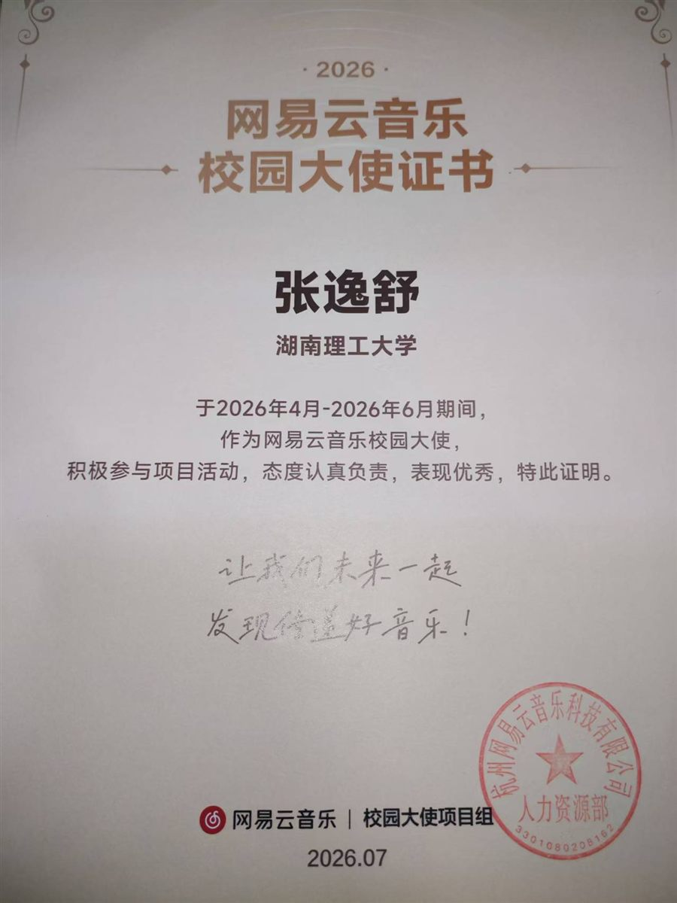
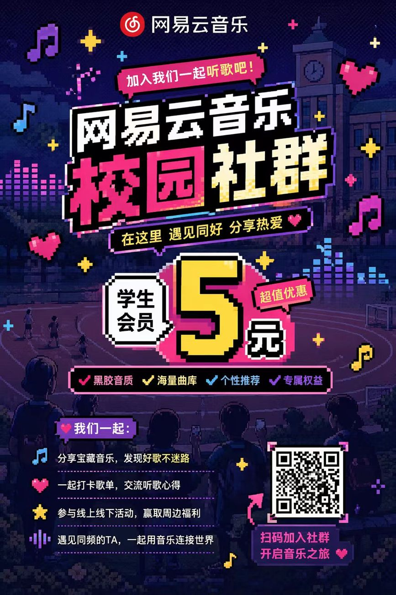
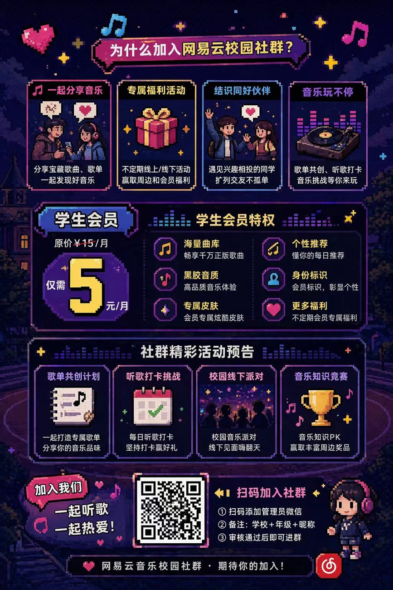
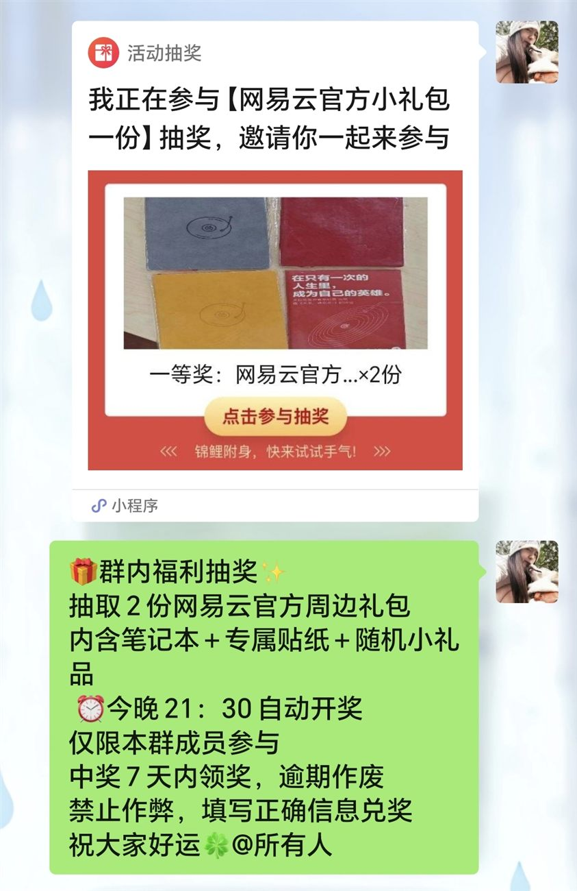

NO.04 / 2026.04 - 2026.07
校园回声站
网易云音乐校园社群运营实验
Campus Community Operation

Community Log
01 / 项目背景
为什么开始这次校园运营实践？
作为网易云音乐校园大使，希望通过校园社群连接高校用户，提高品牌活动触达和用户参与。
我从0开始建立校园用户社群，通过线上推广、活动运营和用户维护，探索校园场景下的社群增长方式。
第一部分 / 身份证明
校园大使证书
02 / 从0到1搭建社群
Community Growth
独立完成校园社群创建与用户招募。
小红书宣传
朋友圈传播
校园群推广
Start
渠道推广
用户加入
100+社群沉淀
03 / 社群日常运营
Community Management
负责社群日常维护：
- 发布网易云音乐活动信息
- 推送品牌权益内容
- 维护群内交流氛围
- 收集用户反馈
不是简单信息发布，而是持续建立用户关系。
04 / 品牌活动推广
Brand Campaign
围绕网易云音乐校园用户需求，参与活动推广与内容传播。
- 设计社群招募宣传物料
- 制作校园推广海报
- 发布活动信息
- 策划抽奖互动内容
将品牌信息转化为更符合校园用户接受习惯的传播内容。
05 / 宣传物料展示
校园传播物料记录



06 / 项目成果
通过本次校园社群运营实践：
- 从0搭建校园用户社群
- 完成100+用户沉淀
- 掌握校园渠道推广方式
- 积累社群维护与活动运营经验
- 完成品牌宣传物料设计与传播
07 / 项目反思
在校园社群运营过程中，我逐渐认识到用户运营不仅是信息传递，更重要的是建立持续互动关系。
用户增长需要依靠合适的渠道、内容表达以及长期维护。